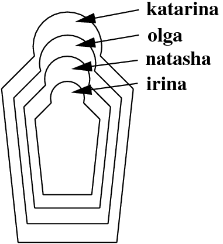

3.3 Exercises
Exercise 3.1 In the text, we discussed the predicate
Suppose we reformulated this predicate as follows:
Would this be problematic?
Exercise 3.2 Do you know these wooden Russian dolls (Matryoshka dolls) where the smaller ones are contained in bigger ones? Here is a schematic picture:

First, write a knowledge base using the predicate directlyIn/2 which encodes which doll is directly contained in which other doll. Then, define a recursive predicate in/2 , that tells us which doll is (directly or indirectly) contained in which other dolls. For example, the query in(katarina,natasha) should evaluate to true, while in(olga, katarina) should fail.
Exercise 3.3 We have the following knowledge base:
directTrain(forbach,saarbruecken).
directTrain(freyming,forbach).
directTrain(stAvold,freyming).
directTrain(fahlquemont,stAvold).
directTrain(metz,fahlquemont).
directTrain(nancy,metz).
That is, this knowledge base holds facts about towns it is possible to travel between by taking a direct train. But of course, we can travel further by chaining together direct train journeys. Write a recursive predicate travelFromTo/2 that tells us when we can travel by train between two towns. For example, when given the query
it should reply yes.
Exercise 3.4 Define a predicate greater_than/2 that takes two numerals in the notation that we introduced in the text (that is, 0, succ(0), succ(succ(0)), and so on) as arguments and decides whether the first one is greater than the second one. For example:
Exercise 3.5 Binary trees are trees where all internal nodes have exactly two children. The smallest binary trees consist of only one leaf node. We will represent leaf nodes as leaf(Label) . For instance, leaf(3) and leaf(7) are leaf nodes, and therefore small binary trees. Given two binary trees B1 and B2 we can combine them into one binary tree using the functor tree/2 as follows: tree(B1,B2) . So, from the leaves leaf(1) and leaf(2) we can build the binary tree tree(leaf(1),leaf(2)) . And from the binary trees tree(leaf(1),leaf(2)) and leaf(4) we can build the binary tree tree(tree(leaf(1), leaf(2)),leaf(4)) .
Now, define a predicate swap/2 , which produces the mirror image of the binary tree that is its first argument. For example: